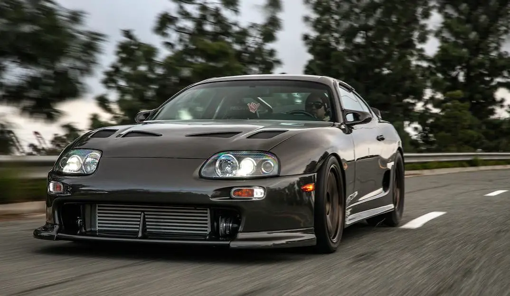
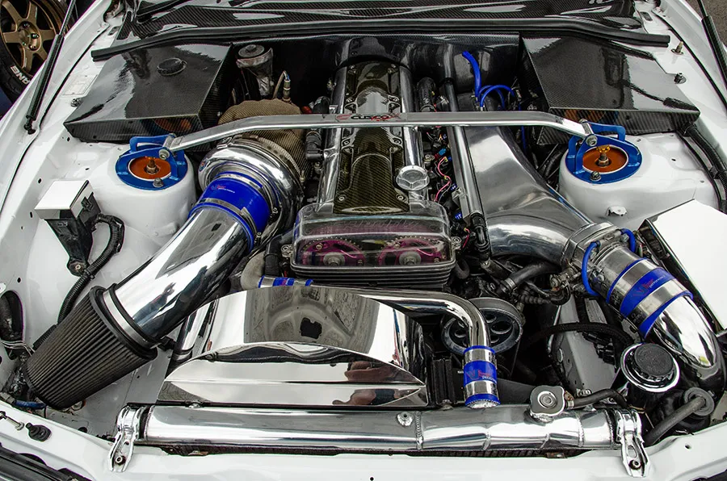
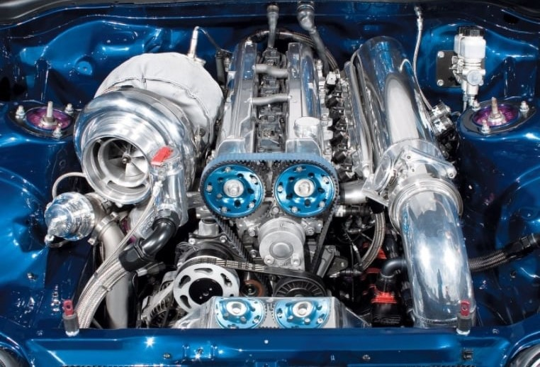

-
Styl i Design:
Supra MkIV charakteryzuje się agresywnym i aerodynamicznym designem, który nadaje mu charakterystyczny wygląd. Jego płynne linie, muskularne nadkola i nisko osadzona sylwetka sprawiają, że jest to jeden z najbardziej rozpoznawalnych samochodów na drodze. Z przodu samochodu dominuje charakterystyczna, szeroka maska z podwójnymi reflektorami, która nadaje mu agresywny wygląd. Z tyłu zauważalny jest charakterystyczny spojler oraz okrągłe światła, które podkreślają sportowy charakter pojazdu.

-
Silnik:
Supra MkIV jest napędzana przez legendarny silnik 2JZ-GTE, sześciocylindrowy, rzędowy, trzylitrowy, turbodoładowany silnik, który jest znany z niezawodności i potężnego potencjału tuningowego. 2JZ-GTE oferuje imponującą moc wyjściową i dużo momentu obrotowego, co sprawia, że Supra MkIV jest niezwykle szybka zarówno na prostych, jak i zakręconych drogach.
  -
Wydajność:
Dzięki doskonałej równowadze między mocą a prowadzeniem, Supra MkIV zapewnia wyjątkowe osiągi na torze i ulicy. Jest to samochód, który oferuje ekscytującą i satysfakcjonującą jazdę, zarówno dla doświadczonych kierowców, jak i dla początkujących. Warianty Turbo osiągają znakomite przyspieszenie i dużą prędkość maksymalną, co sprawia, że Supra MkIV jest prawdziwą maszyną do ścigania się.
-
Kultura i dziedzictwo:
Supra MkIV zyskała ogromną popularność wśród miłośników motoryzacji dzięki swojemu wyjątkowemu wyglądowi, wydajności i potencjałowi tuningowemu. Stała się ikoną kultury samochodowej, a jej pojawienie się w filmach, grach komputerowych i innych mediach jeszcze bardziej podkreśliło jej status legendy. Dzięki swojemu dziedzictwu i kultowemu statusowi, Supra MkIV jest nadal bardzo ceniona przez fanów motoryzacji na całym świecie, a dobrze utrzymane egzemplarze są poszukiwane przez kolekcjonerów.
Toyota Supra JZA80, często określana jako "MKVI", to jeden z najbardziej kultowych samochodów sportowych, który stał się legendą w świecie motoryzacji.